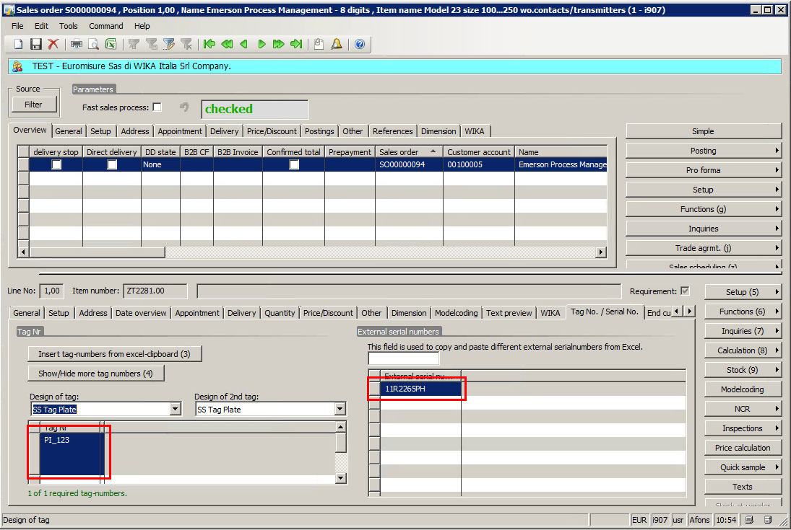
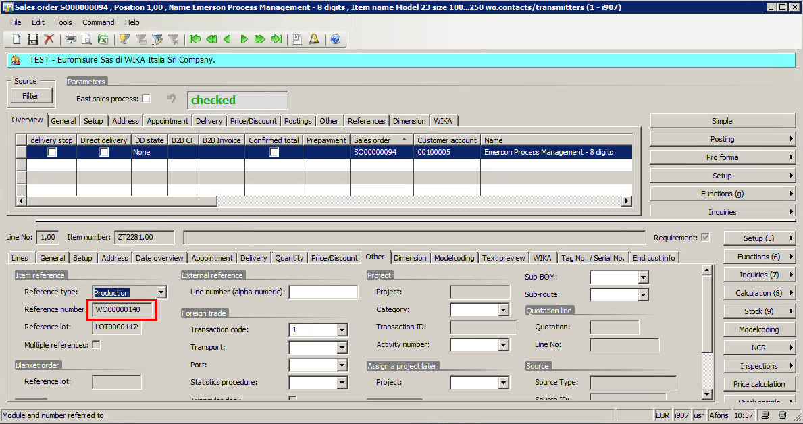
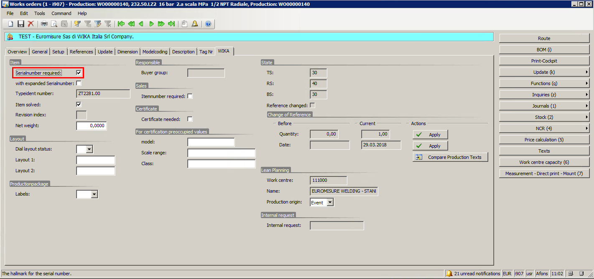
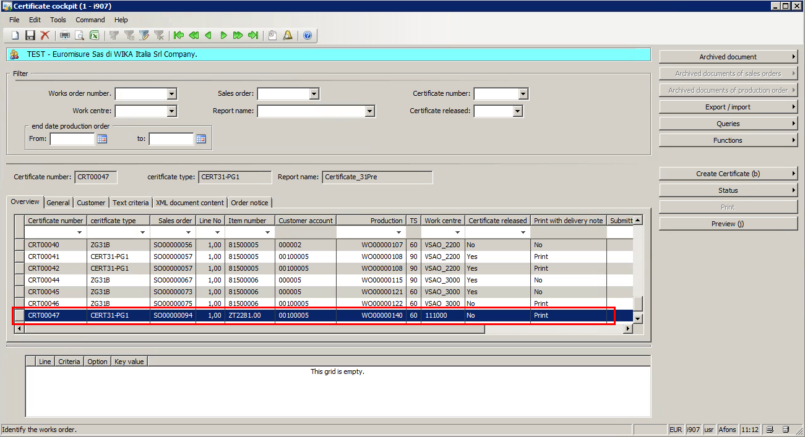
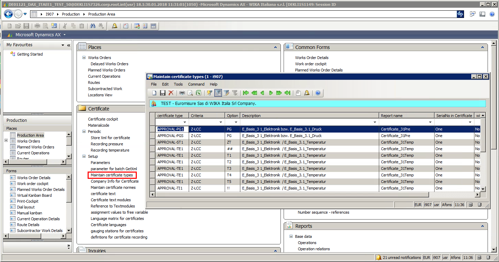
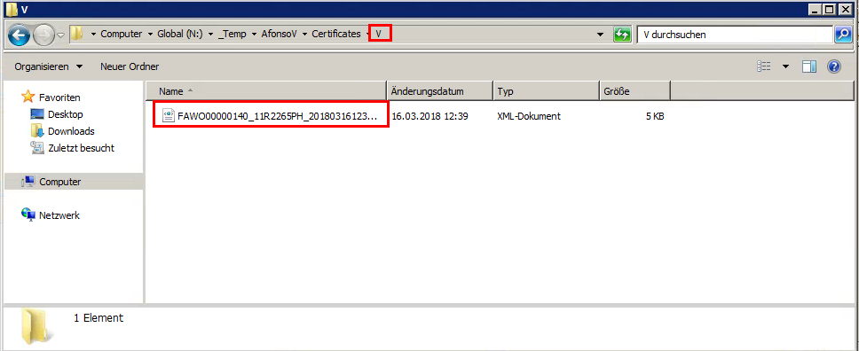

Sales / Production
Create a Sales Order with item which has a certificate.

If necessary, TAG and Serial numbers could be added to the sales order line.

A Work Order will be generated based on this Sales Order Line

And this WO should be set to have Serial Numbers

After the WO is started / printed, Internal Serial Numbers will be generated
And a new line into Certificate will be added

Note
For Modelcoded items, the automatic certificate line creation into Certificate Cockpit depends on setup done on: 
Note
For more information about Certificate creation and processes, please read:
Certificate
WIKA Cal
- Select Sales / Production
- Enter the Work Order number and WIKA Cal will connect to D365 via BC4P and get information
- Inform Model, Class, Scale Range and the Reference
- Click on measurement table and inform Number of Series and Measuring Points
- Click on table and start the Calibration Process
- If necessary, include remarks
- Save the Certificate
- The Certificate data will be populated in WIKA XML Transfer Tool. If results are correct, accept it
- Close to XML Transfer Tool
- After close, the XML files will be copied to the Temp Folder
Note
The Certificate folder structure are:
- A - Cancelled
- E - Error
- Log - Log
- V - Completed
Batch Job / Certificate Cockpit
After the batch job runs, the xml will be moved to Completed folder and it will be imported to Certificate Now, user can preview the generated certificate

Index
| Index | Status | Date | Author | Reason for change |
|---|---|---|---|---|
| 01 | Released | TBD | Simon Berberich | Publication |